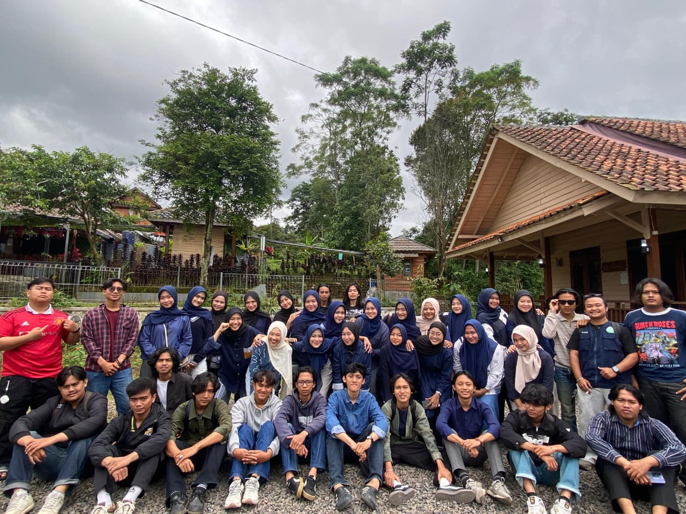

KegiatanUpgrading Pengurus BEM FAI 2026
Upgrading Pengurus BEM FAI 2026 merupakan kegiatan internal yang diselenggarakan oleh Badan Eksekutif Mahasiswa Fakultas Agama Islam Universitas Singaperbangsa Karawang. Kegiatan ini bertujuan untuk mempererat hubungan antar pengurus, membangun rasa kebersamaan, serta meningkatkan kekompakan dalam menjalankan roda organisasi sepanjang satu periode kepengurusan. Melalui rangkaian agenda berupa penguatan karakter, penanaman nilai-nilai organisasi, serta kegiatan team building yang dirancang secara interaktif, Upgrading Pengurus BEM FAI 2026 diharapkan mampu menciptakan lingkungan kerja yang solid, kolaboratif, dan berorientasi pada pelayanan mahasiswa. Kegiatan ini sekaligus menjadi momentum refleksi serta komitmen bersama untuk menghadirkan kinerja organisasi yang lebih efektif, komunikatif, dan progresif di tahun kepengurusan 2026.